155 / 155 kész. Minden animáció egy méretben és egy talpvonalon (a 128 px-es cella alsó sora), ahogy a játékban egymás után jönnek.
Ami még nincs kész, ott a kezdőkocka látszik halványan; a narancs „újra készül” jelűeket elvetetted, az új változat váltja őket.
A a játékban jelűeket a játék már használja. Semmi új nem kerül be, amíg jóvá nem hagyod.
Az udvar mozgó részei (próba)
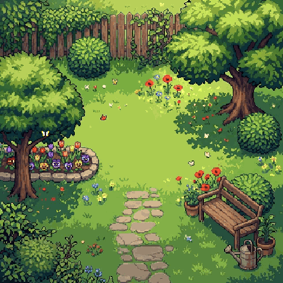
Nyári udvar próba: szélben hajló fa, megrázkódó bokor (Lili belemegy), átrepülő verebek, pillangó Semmi nincs bekötve; a fa és a bokor a meglévő takaró rétegekből készült.
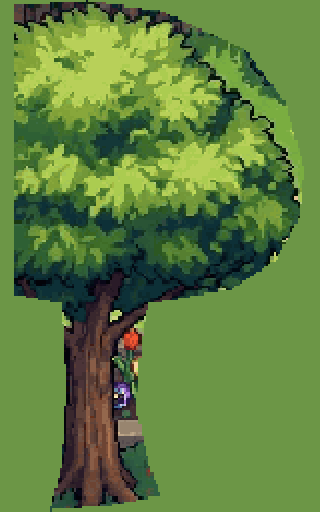
bal fa, szél
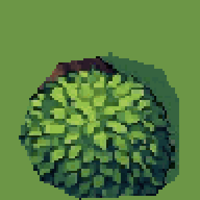
jobb bokor, megrázkódik
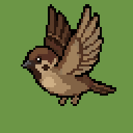
veréb, repül
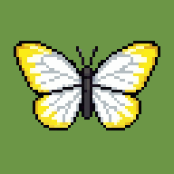
pillangó
sit_down
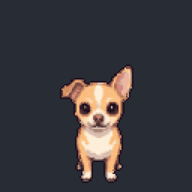
S kész sitting down calmly onto her haunches, then sitting still
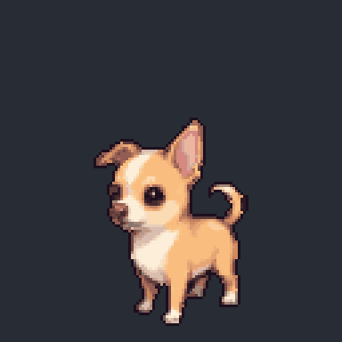
SW kész sitting down calmly onto her haunches, then sitting still
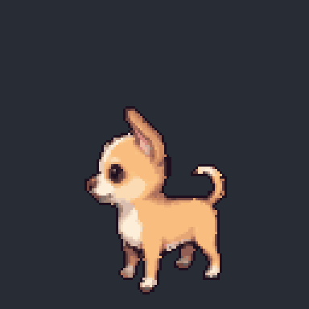
W kész sitting down calmly onto her haunches, then sitting still
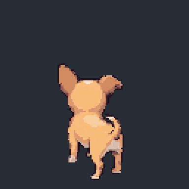
NW kész sitting down calmly onto her haunches, then sitting still
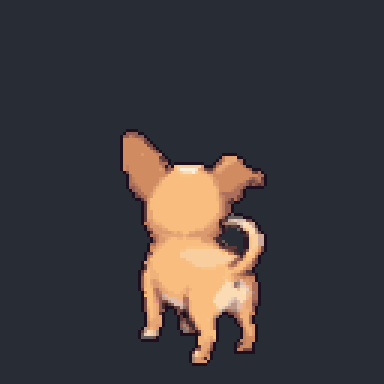
N kész sitting down calmly onto her haunches, then sitting still
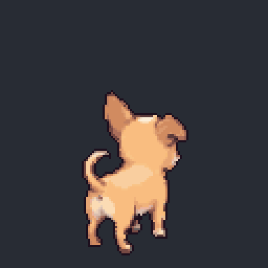
NE kész sitting down calmly onto her haunches, then sitting still
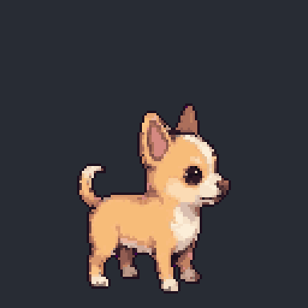
E kész sitting down calmly onto her haunches, then sitting still
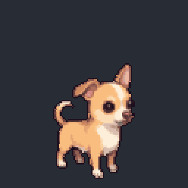
SE kész sitting down calmly onto her haunches, then sitting still
stand_up
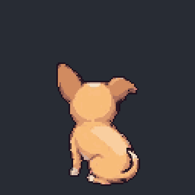
NW kész standing up from sitting onto all four paws, then standing still
squat_pee
SE kész squatting down low to pee like a female dog, then staying still
walk
S kész a játékban
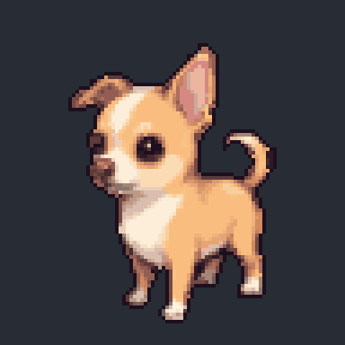
SW kész a játékbanW kész a játékbanNW kész walking
S kész running fast in a full gallop, ears back, happy zoomiesSW kész running fast in a full gallop, ears back, happy zoomiesW kész running fast in a full gallop, ears back, happy zoomiesNW kész running fast in a full gallop, ears back, happy zoomiesN kész running fast in a full gallop, ears back, happy zoomiesNE kész running fast in a full gallop, ears back, happy zoomiesE kész running fast in a full gallop, ears back, happy zoomies
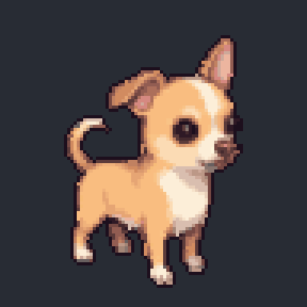
SE kész a játékban running fast in a full gallop, ears back, happy zoomies
SW kész sitting still, blinking slowly, one ear twitching
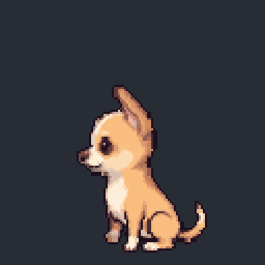
W kész sitting still, blinking slowly, one ear twitchingNW kész sitting still, blinking slowly, one ear twitching
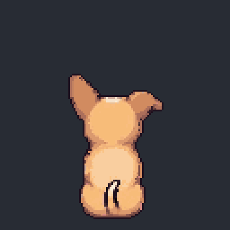
N kész sitting still, blinking slowly, one ear twitching
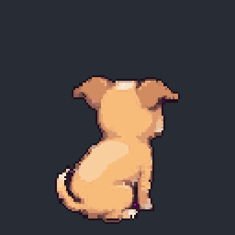
NE kész sitting still, blinking slowly, one ear twitching
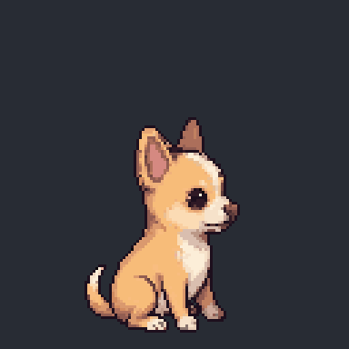
E kész sitting still, blinking slowly, one ear twitching
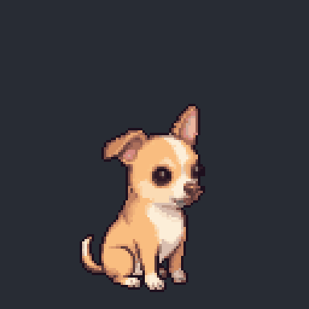
SE kész sitting still, blinking slowly, one ear twitching
play_bow
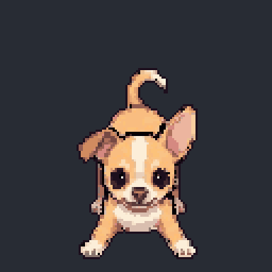
S kész legs still, wiggle tail and ass like happy dog, and happy face
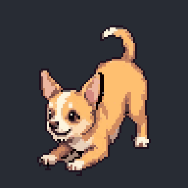
SW kész v3a játékban
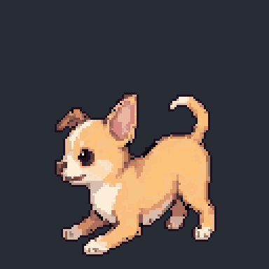
W kész legs still, wiggle tail and ass like happy dog, and happy face
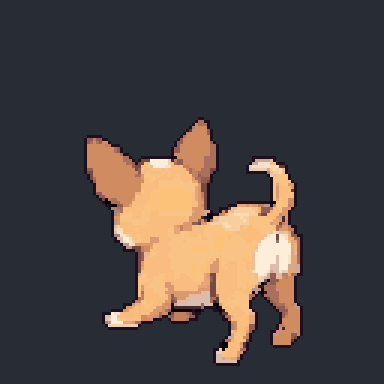
NW kész legs still, wiggle tail and ass like happy dog, and happy face
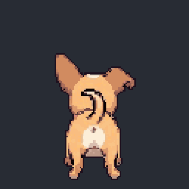
N kész legs still, wiggle tail and ass like happy dog, and happy face
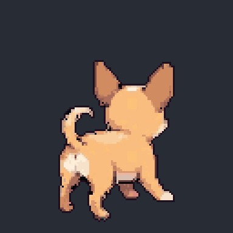
NE kész legs still, wiggle tail and ass like happy dog, and happy face
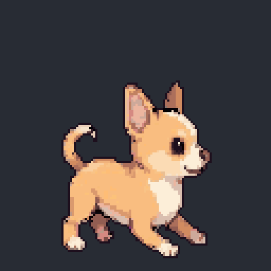
E kész legs still, wiggle tail and ass like happy dog, and happy face
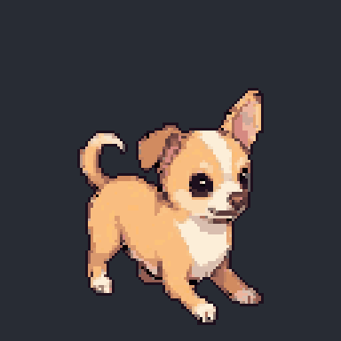
SE kész legs still, wiggle tail and ass like happy dog, and happy face
tug_rope
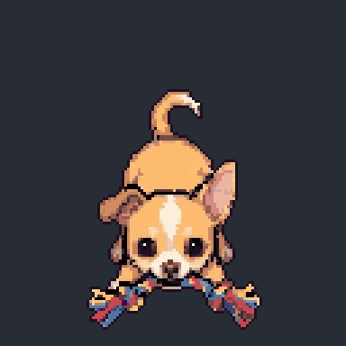
S kész rear end up, tugging and shaking the rope toy playfully, tail wagging
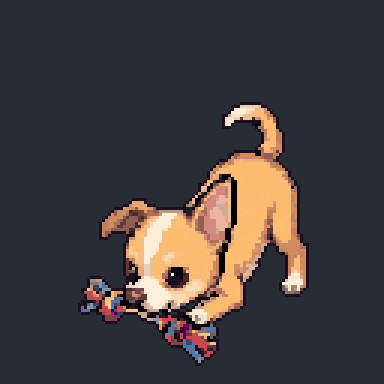
SW kész rear end up, tugging and shaking the rope toy playfully, tail wagging
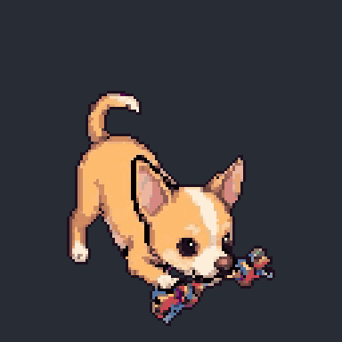
SE kész rear end up, tugging and shaking the rope toy playfully, tail wagging
eat_treat
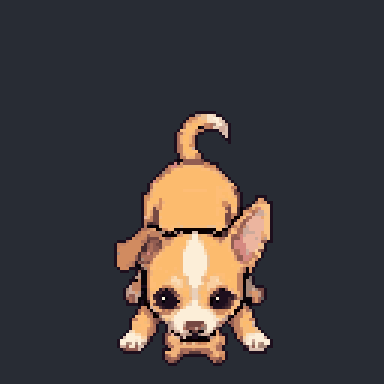
S kész rear end up, head down eating the biscuit, chewing, tail wagging
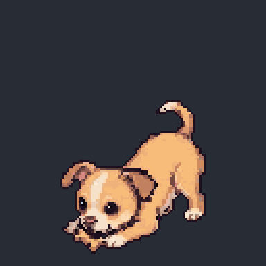
SW kész rear end up, head down eating the biscuit, chewing, tail wagging
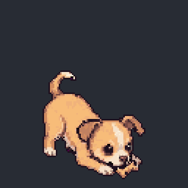
SE kész rear end up, head down eating the biscuit, chewing, tail wagging
carry_trot
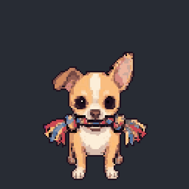
S kész trotting happily with the rope toy held in her mouth
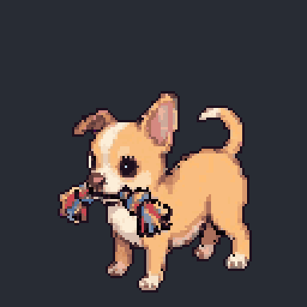
SW kész trotting happily with the rope toy held in her mouth
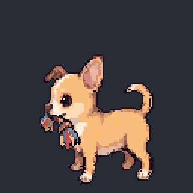
W kész trotting happily with the rope toy held in her mouth
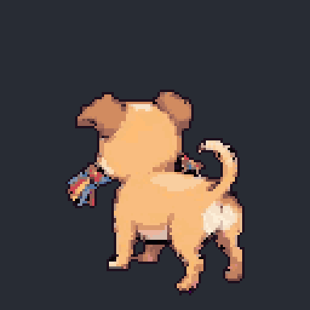
NW kész trotting happily with the rope toy held in her mouth
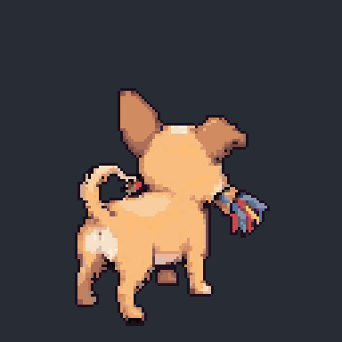
NE kész trotting happily with the rope toy held in her mouth
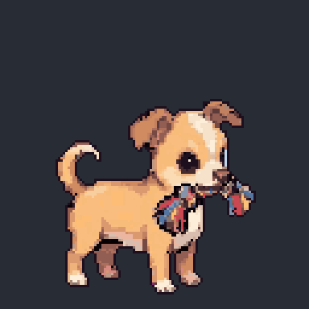
E kész trotting happily with the rope toy held in her mouth
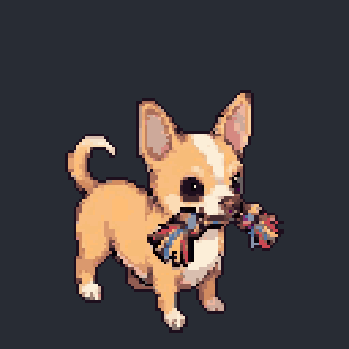
SE kész trotting happily with the rope toy held in her mouth
lie_down_rope
S kész lying down on her belly holding the rope toy in her mouth, then resting
chew_rope
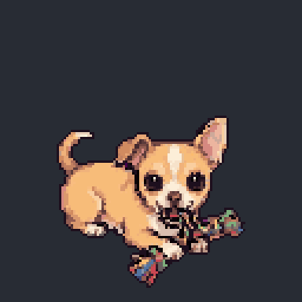
S kész lying down, chewing the rope toy held in her mouth
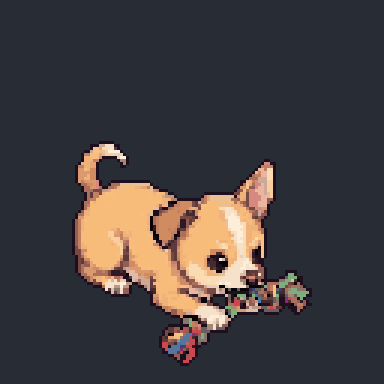
SE kész lying down, chewing the rope toy held between her paws
chew_treat
S kész lying down, chewing the biscuit held between her pawsSE kész lying down, chewing the biscuit held between her paws
eat
W kész a játékban eating kibble from the bowl, chewingW kész PixMiniMax eating kibble from the bowl, chewing
drink
W kész PixMiniMax drinking water from the bowl, lapping with her tongue
pee
SW kész squatting still while peeing, tail slightly lifted, tiny movementsSE kész squatting still while peeing, tail slightly lifted, tiny movements
poop
SW kész hunched squat while pooping, small strain, tail liftedSE kész hunched squat while pooping, small strain, tail lifted
sleep_curl
S kész sleeping peacefully, body slowly rising and falling
lie_down
S kész lying down on her belly with front paws forward, then restingSW kész lying down on her belly with front paws forward, then restingSE kész lying down on her belly with front paws forward, then resting
pet_enjoy
S kész lying down, eyes closed, enjoying being petted, tail wagging slowlySW kész lying down, eyes closed, enjoying being petted, tail wagging slowlySE kész lying down, eyes closed, enjoying being petted, tail wagging slowly
pant_smile
S kész a játékbanSW kész sitting and happily panting with tongue outW kész sitting and happily panting with tongue outNW kész sitting and happily panting with tongue outN kész sitting and happily panting with tongue outNE kész sitting and happily panting with tongue outE kész sitting and happily panting with tongue outSE kész sitting and happily panting with tongue out
bark
S kész 2. változat barking: with each bark she throws her head up high, nose pointing to the sky, mouth wide open, then back downSW kész barking: with each bark she throws her head up high, nose pointing to the sky, mouth wide open, then back downW kész barking: with each bark she throws her head up high, nose pointing to the sky, mouth wide open, then back downE kész barking: with each bark she throws her head up high, nose pointing to the sky, mouth wide open, then back downSE kész barking: with each bark she throws her head up high, nose pointing to the sky, mouth wide open, then back down
head_tilt
S kész tilting her head curiously to one side and backSW kész tilting her head curiously to one side and backSE kész tilting her head curiously to one side and back
look_around
S kész a játékbanSW kész looking around curiously, turning her head left and rightSE kész looking around curiously, turning her head left and right
ask_pet
S kész sitting, raising one front paw, asking to be pettedSW kész sitting, raising one front paw, asking to be pettedSE kész sitting, raising one front paw, asking to be petted
sun_sit
S kész sitting in the sun, eyes half closed, relaxed slow breathingSW kész sitting in the sun, eyes half closed, relaxed slow breathing
sniff
S kész walking slowly with her nose to the ground, sniffingSW kész walking slowly with her nose to the ground, sniffingW kész walking slowly with her nose to the ground, sniffingNW kész walking slowly with her nose to the ground, sniffingN kész walking slowly with her nose to the ground, sniffingNE kész walking slowly with her nose to the ground, sniffingE kész walking slowly with her nose to the ground, sniffingSE kész walking slowly with her nose to the ground, sniffing
S kész scurrying away quickly with ears flat, looking guiltySW kész scurrying away quickly with ears flat, looking guiltySW kész 1. próba scurrying away quickly with ears flat, looking guiltyW kész scurrying away quickly with ears flat, looking guiltyNW kész scurrying away quickly with ears flat, looking guiltyN kész scurrying away quickly with ears flat, looking guiltyNE kész scurrying away quickly with ears flat, looking guiltyE kész scurrying away quickly with ears flat, looking guiltySE kész scurrying away quickly with ears flat, looking guilty
startle
S kész startled, jumping back in surpriseSW kész startled, jumping back in surpriseW kész startled, jumping back in surpriseNW kész startled, jumping back in surpriseN kész startled, jumping back in surpriseNE kész startled, jumping back in surpriseNE kész 1. próba startled, jumping back in surpriseE kész startled, jumping back in surpriseSE kész startled, jumping back in surprise
pounce
S kész pouncing forward playfully with both front pawsSW kész pouncing forward playfully with both front pawsW kész pouncing forward playfully with both front pawsNW kész pouncing forward playfully with both front pawsN kész pouncing forward playfully with both front pawsNE kész pouncing forward playfully with both front pawsE kész pouncing forward playfully with both front pawsSE kész pouncing forward playfully with both front paws